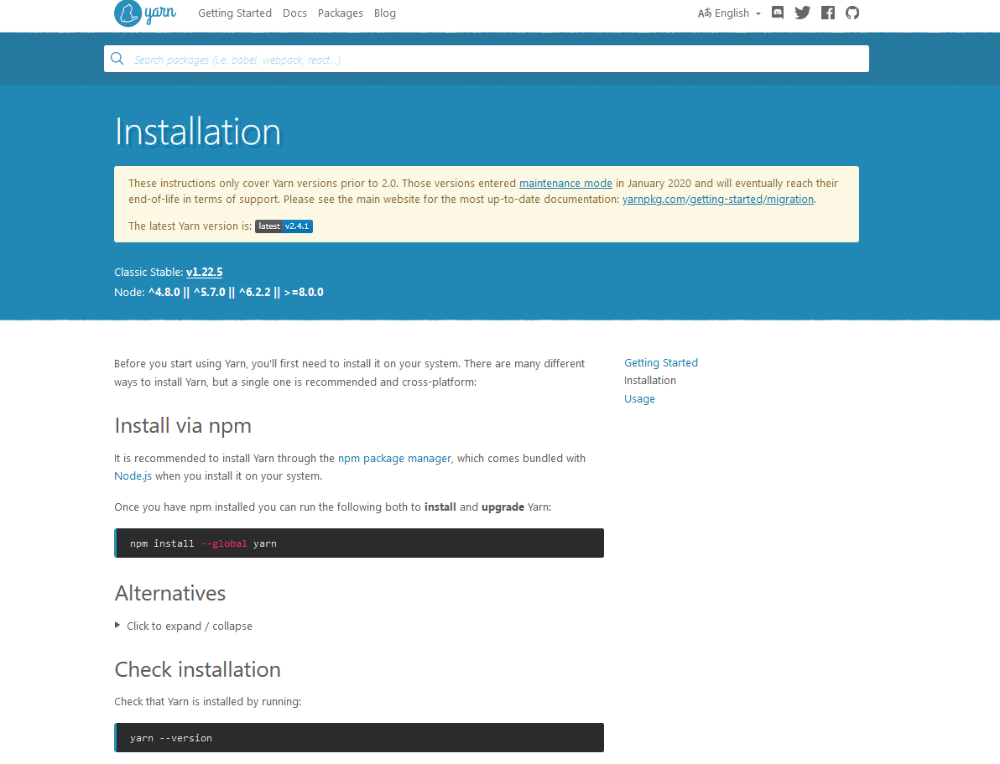

Welcome to
Loncaio - İş Panosu React Next JS Şablonu
Şablonumuzu seçtiğiniz için teşekkür ederiz -
Loncaio.
En modern araçlar Bootstrap 5 + React NextJS ile inşa edilmiştir. bu bir
yüksek kaliteli ve iyi organize edilmiş React NextJS Şablonu, bir React NextJS şablonunun tüm ihtiyaçlarını karşılamak için özel olarak tasarlanmıştır.
Emlak İşi. Çok çeşitli özel sayfalar, tamamen farklı 10 Ana Sayfa ve
sonsuz tasarım olanakları.
oluşturmanıza yardımcı olacak çok eksiksiz ve son derece özelleştirilebilir bir React NextJS şablonudur.
kendi web sitesi düzenleri. Basit, zarif, kapsamlı, profesyonel...
Gereksinimler
Yüklemek için sistem gereksinimleri vardır ve
bu şablonu ve bileşenlerini düzgün bir şekilde kurun. Node.js ve
Yarn bilgisayarinizda yuklu oldugundan emin olun
Önerilen node ve yarn

Yarn Kuurlumu
Loncaio - Kurulabilir bir React şablonu
zip dosyası. yüklemeniz gereken bu dosya
Lisans - Bu klasör şunları içerir
lisansın hüküm ve koşulları.
Dokümantasyon - Bu klasör şunları içerir
şu anda okuduğunuz şey :)
Sonraki Kurulum
Nasıl yapacağınızı görmek için lütfen videodaki talimatları izleyin
React'i hostinginize yükleyebilirsiniz:
Yerel ana bilgisayar için -
Komut istemini açın
yarn kurulumu
yarn dev (dev sunucusunu şu adreste başlatacaktır http://loaclhost:3000)
yarn lint:fix (Bu, kodunuzu biçimlendirecek ve otomatik düzeltilebilir eslint hatasını düzeltecektir)
Site Başlığını ve Favicon'u Değiştirme
Site başlığınızı ve Favicon'unuzu değiştirmek için Loncaio'yu açın
editörünüze gidin ve aşağıdaki ekran görüntüsündeki konuma gidin
aşağıda verilmiştir.
Demo Verilerini İçe Aktar'a gidin" />
Bu ekran görüntüsünü takip ederek favicon'u değiştirebilirsiniz
görüntü
Demo Verilerini İçe Aktar'a gidin" />
Bu ekran görüntüsünü takip ederek site genel site başlığını ve diğer metaları değiştirebilirsiniz
Demo Verilerini İçe Aktar'a gidin" />
Bu ekran görüntüsünü takip ederek sayfa başlığını değiştirebilirsiniz
Logo Degistirme
Site logonuzu aşağıdaki ekran görüntüsü ile değiştirmek için
İletişim Formu İçeriğini aşağıdaki ekran görüntüsüne göre değiştirin
Aşağıdaki ekran görüntüsüne göre Adres İçeriğini Değiştir
Diğer, kayıt, giriş açılır form İçeriğini aşağıdaki ekran görüntüsü ile değiştirin
Altbilgi Menüsü & CopyRight
Footer Social & CopyRight içeriğinizi değiştirmek için şunları yapabilirsiniz
buradaki ekran görüntüsünü takip ederek değiştirin.
Altbilgi menüsü verilerini ve sosyal verileri veri klasörü seçeneklerinden değiştirmek için
components footerfooter.js
Altbilgi menüsü verilerini ve sosyal verileri veri klasörü seçeneklerinden değiştirmek için
components footerCopyrightFooter.js
Bu ekran görüntüsünü takip ederek Altbilgi Menüsü İçeriğini değiştirin.
Bu ekran görüntüsünü takip ederek Altbilgi CopyRight İçeriğini değiştirin.
Bu site için Tüm Veriler
Veri içeriğinizi değiştirmek için şunları yapabilirsiniz
buradaki ekran görüntüsünü takip ederek değiştirin.
Veri klasörü seçeneklerinden verileri değiştirmek için
data
Bu ekran görüntüsünü takip ederek Tüm Veri İçeriğini Değiştirin.
404 Page
404 sayfasi içeriğini değiştirmek için şunları yapabilirsiniz
buradaki ekran görüntüsünü takip ederek değiştirin.
To change 404 page content from the data folder options go to
Sayfalar
404.jsx
Bu ekran görüntüsünü takip ederek 404 sayfası İçeriğini değiştirin.
Küresel Rengi Değiştir
Değiştirmek için Global Rengi aşağıdaki ekran görüntüsü ile değiştirin
bunlar aşağıda verilmiştir.
Bu ekran görüntüsünü takip ederek Global Rengi Değiştirebilirsiniz
Şablon özelleştirmesine veya özel geliştirmeye ihtiyacınız varsa
hizmetleri için lütfen bizimle iletişime geçin.